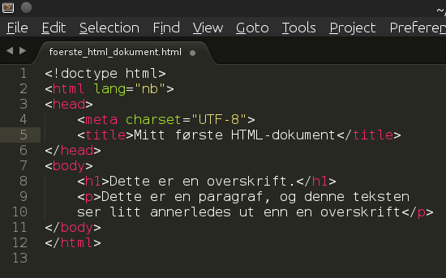

Gode verktøy er helt avgjørende uansett hva slags jobb vi skal gjøre. Dette gjelder også når vi skal programmere. I denne boka skal vi benytte oss av to typer verktøy.
De fleste moderne nettlesere fungerer veldig bra som støtteverktøy til programmering. De har de funksjoner og verktøy som trengs for å jobbe med HTML-programmering på en effektiv og god måte. De mest brukte nettleserne i dag er Chrome, FireFox, Internet Explorer, Opera og Safari.
Editor.
Det finnes veldig mange gode editorer for programmering. De mest avanserte er store programmeringsmijø, eller IDE'er som de også kalles. I dette kurset kommer vi langt med noe enklere editorer, som allikevel er veldig kraftige og funksjonsrike.
Figure 1: Et lite ekesmpel på hvordan et enkelt HTML-dokument kan se ut.

Til dette kurset anbefaler jeg at dere bruker notepad++ eller Sublime Text 2. Disse er enkle, men allikevel kraftige kodeeditorer der man enkelt og oversiktlig kan jobbe med flere filer samtidig. De har også god støtte for automatiske kodeforslag og fargelegging av kode slik at lesing går lettere.
Før vi lager vårt første html-side.
Nå er vi straks klare til å sette i gang med det som er gøy, men før det må vi ha noen få ting på plass...
Example: Kom igang med editorn.
1 2 3 4 5 6 7 8 9 10 11 12 | <!doctype html>
<html lang="nb">
<head>
<meta charset="UTF-8">
<title>Mitt første HTML-dokument</title>
</head>
<body>
<h1>Dette er en overskrift.</h1>
<p>Dette er en paragraf, og denne teksten ser litt annerledes
ut enn en overskrift</p>
</body>
</html>
|